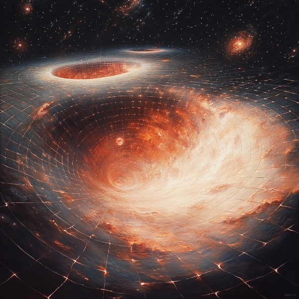

Introduction to Loop Quantum Gravity (LQG)
In the quest to understand the universe’s most fundamental forces, Loop Quantum Gravity (LQG) emerges as a compelling theory that seeks to bridge the gap between quantum mechanics and general relativity. While Einstein’s theory of general relativity describes gravity as the curvature of spacetime, quantum mechanics governs the subatomic world. LQG attempts to unify these concepts by proposing a discrete structure of spacetime, fundamentally altering our understanding of the universe’s fabric.
The Basics of LQG
Figure 1: AI Artist conception of Loop Quantum Gravity
Loop Quantum Gravity (LQG) proposes that spacetime is not a smooth continuum but rather consists of tiny, discrete loops. These loops are incredibly small, on the order of the Plank length1. In LQG, these loops form a complex, interconnected structure known as a spin network. Spin networks provide a quantum state of the gravitational field, representing the geometry of space at the smallest scales. As these spin networks evolve, they form a “spin foam,” which describes the quantum evolution of spacetime. This dynamic interplay between spin networks and spin foam suggests that spacetime itself is quantized, with space and time emerging from more fundamental quantum processes.
Spacetime Quantization

Figure 2: AI Artist conception of Spacetime Quantitization
In this theory, the traditional idea of spacetime as a continuous entity is replaced with the notion of quantization. Just as light is quantized into photons, spacetime itself is thought to be quantized into finite loops. This discrete nature prevents singularities, such as those found in black holes or the Big Bang, by imposing a minimum possible length scale.
Implications for Gravity and Time

Figure 3: AI Artist conception of Gravity Fields
One of the most intriguing implications of LQG is its potential to explain time and gravity in a quantum framework. Unlike general relativity, which treats gravity as a geometric property of curved spacetime, LQG posits that gravity arises from the interactions of these fundamental loops. This perspective offers a new way to understand gravitational phenomena, particularly in extreme conditions where classical theories break down. In the Age of Chronos, this is a fundamental principle of manipulating time dilation without velocity.
Time Dilation Zones and Beyond
Figure 4: Time Dilation and Beyond
In the world of the Age of Chronos, LQG is not just a theoretical framework but a practical tool. The technology derived from LQG allows the creation of time dilation zones without relying on relative velocity. Centuries after the initial discovery, this technology has advanced to the point where entire star systems can be enveloped in these zones, dramatically altering the passage of time within them. This has profound implications for space travel, resource management, and even societal development, as civilizations can manipulate time to suit their needs.
The Ongoing Journey

Figure 5: Ongoing Journey
Loop Quantum Gravity is still a developing field, with researchers continuously refining its models and exploring its implications. In the Age of Chronos, however, it serves as a cornerstone of technological advancement, enabling feats once thought impossible and reshaping our understanding of the cosmos.
Plank Scale
The Planck scale is a fundamental concept in physics, marking the boundary where quantum mechanics and general relativity converge. It represents the smallest possible units of measurement in the universe, defining the limits of space, time, and energy.
- Planck Length (lP):
Approximately 1.62 × 10-35 meters, the smallest distance scale that can be probed with accelerators.
- Planck Time (tP):
Approximately 5.39 × 10-44 seconds, the smallest unit of time that can be measured.
- Planck Mass (mP):
Approximately 2.176 × 10-8 kilograms, the smallest unit of mass that can be detected.
- Planck Energy (EP):
Approximately 1.22 × 1028 electronvolts (eV), the energy scale at which quantum gravity becomes significant.